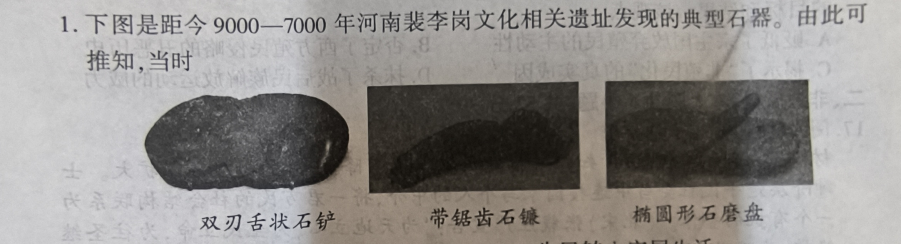
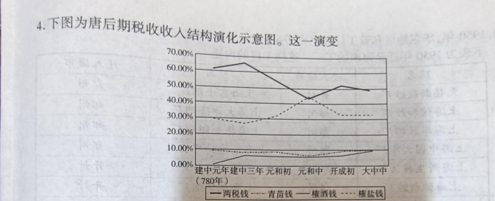
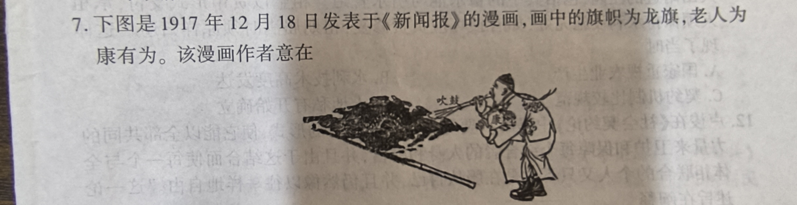
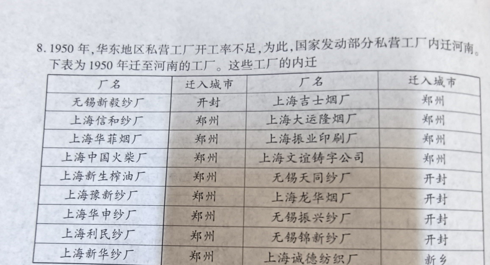

材料一 到了宋代，由于知识传播的成本大幅下降，士绅的规模日渐扩大。士绅阶层是平民社会当中连接国家与个人的中介，将一君万民的社会结构联系为一个有机的整体。（北宋）张载庄严宣告：“为天地立心，为生民立命，为往圣继绝学，为万世开太平。”士大夫们心怀天下，风骨铮铮，无不浸润了理学的精神价值与道德理想。三纲领八条目则进一步内化于一般士绅的心性当中，日常的洒扫应对亦可体会天地之理，修身齐家亦有治国平天下之功，理学的精神也因此自觉深入到民间基层。
——摘编自张岱年、方克立《中国文化概要》
材料二 如果一种思想成为拥有权力的意识形态而笼罩一切，这时，会有一些空洞的套话反复，这些话语不仅会常常写在书里而且会成为背诵的教条，甚至当作生活的金科玉律……我曾经相当注意明代和清朝初期，皇权运用普遍主义的真理观念对思想的垄断和遏制。
——摘编自葛兆光《中国思想史导论·思想史的写法》
（1）原因（6分）
（2）新思想（6分）
【解析】宋代因印刷术普及、士绅阶层壮大，理学借助科举和教化深入民间；明清之际思想家针对皇权专制和理学教条，提出一系列具有启蒙色彩的新主张，反映了时代变动。
材料 中国共产党在不同历史时期，根据肩负的使命提出了不同的教育主张并加以贯彻。以下是中国共产党不同时期对于教育工作思考的相关内容。
| 序号 | 内容 |
|---|---|
| ① | 《中华苏维埃共和国宪法大纲》强调“在进行阶级战争许可的范围内，应开始施行完全免费的普及教育”，第二次全国苏维埃代表大会提出苏维埃文化教育“在于以共产主义的精神来教育广大的劳苦民众”。 |
| ② | 《中国人民政治协商会议共同纲领》指出，新中国的教育工作要“以提高人民文化水平、培养国家建设人才、肃清封建的、买办的、法西斯主义的思想、发展为人民服务的思想为主要任务”；中央教育部进一步明确教育的目的是“为人民服务，首先为工农兵服务，为当前的革命斗争与建设服务”。 |
| ③ | 党的六届六中全会上，毛泽东明确指出全民族最迫切的任务之一是“实行抗战教育政策，使教育为长期战争服务”。 |
| ④ | 党的一大通过的《中国共产党第一个决议》指出“教育工人，使他们在实践中去实现共产党的思想”；党的二大强调“改良教育制度，实行教育普及”。 |
| ⑤ | 党的三大提出将“引导工人农民参加国民革命”作为党的中心工作，加强“对于工人农民之宣传与组织”。 |
| ⑥ | 第二个五年计划指出，党的教育工作“应该在全国各地区努力扫除文盲，有计划、有步骤地推行文字改革，逐步地举办工农业余小学和中学，保证工农群众文化水平的不断提高”；毛泽东在《关于正确处理人民内部矛盾的问题》中强调，“我们的教育方针，应该使受教育者在德育、智育、体育几方面都得到发展，成为有社会主义觉悟的有文化的劳动者”。 |
（1）政策阐释（任选两则，每则4分，共8分）
（2）共同价值（6分）
材料一 15世纪西欧商品经济发展，资本主义萌芽出现，人们需要越来越多的黄金、白银等可以充当货币的贵重金属进行商品交易，但西欧本土的金银产量不能满足需求。《马可·波罗行纪》使欧洲人相信东方遍地黄金，对东方充满幻想，点燃了欧洲人到东方寻金的热情。西欧各国统治者为了维护统治、增强国力、获得财富，都纷纷支持远洋探险活动。新航路的开辟使得海洋这个大陆之间的天然屏障被逾越，世界各地各个民族各种文明之间彼此隔绝的状态被打破，各个地区各个民族的历史逐渐融合成为统一的人类历史。
材料二 2013年，中国国家主席习近平提出“一带一路”倡议。这一倡议秉持共商共建共享原则，深化沿线国家政策沟通、设施联通、贸易畅通、资金融通、民心相通，打造国际合作新平台，增添共同发展新动力。
——摘编自2017年3月《南方周末》
（1）新航路开辟的历史背景（6分）
（2）“一带一路”国际合作的意义（8分）
【解析】比较丝绸之路与新航路：相同点——促进东西方联系；不同点——背景（小农经济 vs 商品经济）、目的（政治 vs 经济）、交往方式（和平 vs 武力掠夺）、交流内容（土特产 vs 廉价商品）、结果（渐衰 vs 促进资本主义）。
材料 有学者认为，在刚过去的20世纪，人类社会出现了以下五条发展脉络：
一、20世纪是资本主义继续发展的世纪，在过去的一百年里，资本主义曾面临几次严峻的挑战，但通过自身调整，资本主义世界度过了危机；
二、20世纪是社会主义的悲喜剧，俄国十月革命成功，二战后一批国家选择了社会主义道路，但20世纪80年代末90年代初社会主义运动经历了重大挫折；
三、20世纪是民族主义发展的重要时期，亚非拉许多国家和地区掀起了民族解放运动的高潮，但仍面临发展经济、维护独立的任务；
四、20世纪是战争与和平交替的世纪，两次世界大战给人民的生命财产带来了巨大的损失，20世纪后半叶，世界维持了较长时期的和平；
五、20世纪是全球化加速发展的世纪，中国制造的商品遍及全世界各个角落，美国好莱坞制作的大片占据了世界各国的影视市场。
——摘编自王红生《二十世纪世界史》
【示例】
选取观点：一、20世纪是资本主义继续发展的世纪。
题目：《危机与调适——20世纪资本主义的自我革新之路》
论述：
总结：资本主义通过不断改革与自我调适展现了较强应变能力，但其内在矛盾（如金融危机、贫富分化）并未根除，仍面临诸多挑战。
评分参考：观点明确（2分），史论结合（6分，至少2个典型史实），逻辑严谨（4分）。
（其他观点如“社会主义的悲喜剧”“全球化加速”等，参照此标准，史实支撑合理即可）